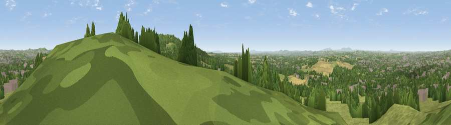

Wychbury Hill
#6751 in England · top 6% of its area beats it · near HagleyThe view, rendered

A 360° render of this exact spot computed from the terrain model, tree cover and land cover — summer colours, afternoon light, calibrated against photographs of famous viewpoints. Real trees, hedges and buildings will differ in detail.
The panorama
Grey silhouette: terrain skyline in each direction (720 bearings, Earth curvature and refraction included). Dashed green: skyline with trees (+15 m) and buildings (+8 m) as obstacles. Blue strip: how far the ground is visible on each bearing.
Where the view opens
Wedge length = distance to the farthest visible ground on that bearing (vegetation-aware). Rings at 10, 25 and 50 km.
What fills the view
43% grassland · 35% woodland · 15% built-up · 8% cropland
Angular shares of the visible panorama (visual magnitude), not map area. Landscape diversity 0.53 (0–1 Shannon).
Key numbers
More beautiful places nearby
The staircase of upgrades: each row has a higher view potential than everything closer. Driving times are estimates from straight-line distance, calibrated against real road routing — check an actual route before setting out.
| Place | Direction | Drive | Score |
|---|---|---|---|
| Viewpoint near Clent | SE · 2 km | ~5 min | 74.3 |
| Viewpoint near Abberley | SW · 21 km | ~36 min | 77.5 |
| Viewpoint near Abberley | SW · 22 km | ~37 min | 78.1 |
| Abberley Hill | SW · 22 km | ~37 min | 80.4 |
| Viewpoint near Great Witley | SW · 24 km | ~39 min | 83.4 |
| Titterstone Clee | W · 33 km | ~50 min | 83.8 |
| North Hill | SSW · 38 km | ~57 min | 86.8 |
| Worcestershire Beacon | SSW · 39 km | ~59 min | 87.1 |
52.43389, -2.12167 · source: osm peak · position refined by local search. Computed location — check access rights before visiting.